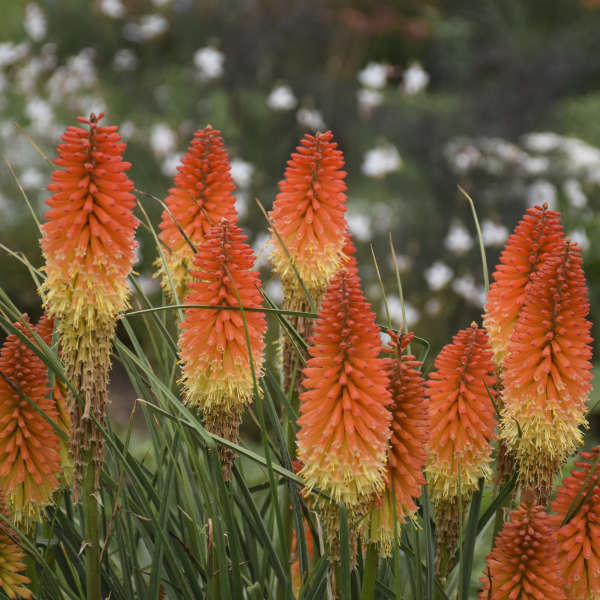
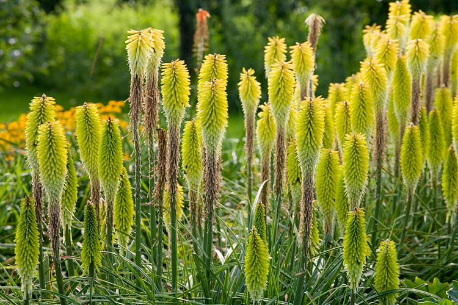

Common Name: Red-hot poker
Botanical Name: Kniphofia
Chinese Name: 火炬花

Kniphofia / Red-hot poker |

Kniphofia / Red-hot poker |

Kniphofia / Red-hot poker |
Other references
RHS
Gardenia
Gardeners' World
To help keep your red-hot pokers healthy;
Tidy plants in mid spring
Water container-grown plants regularly over the summer
Deadhead after flowering
火炬花，别名火把莲，英文名 red hot poker, 学名Kniphofia (knee-FOE-fee-ah)。多年生草本植物，花茎直立生长，株高80～150厘米。火炬形的总状花序上长着数百朵筒状小花，花冠橘红色，黄色和红色，花期6～7月。
火炬花原产于南非，喜欢温暖，阳光充足的环境，也耐半阴，宜生长于疏松肥沃的沙壤土中。也可丛植于草坪之中或植于假山石旁，用作配景。
火炬花的花蜜丰富，花朵奇异，火炬花的叶子也很壮观。比较容易打理。
Overwintering
Leave the plants alone until mid-spring as the old growth will protect the crown of the plant. Once the weather has begun to warm up, any dead or untidy-looking foliage can be pulled away – this will provide the opportunity to check for slugs and snails which can damage developing flowerheads and young growth. Rosettes of more tender species can be protected with fleece duing cold periods in winter.